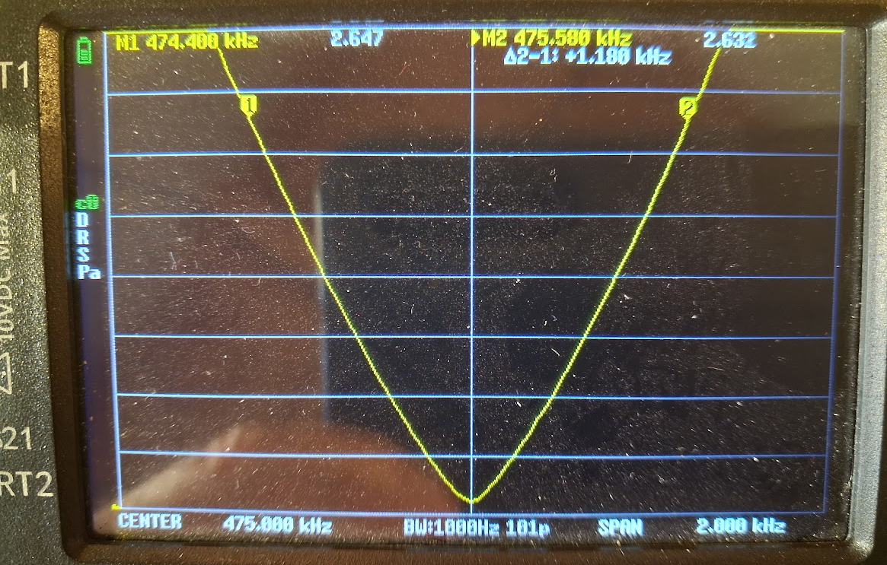
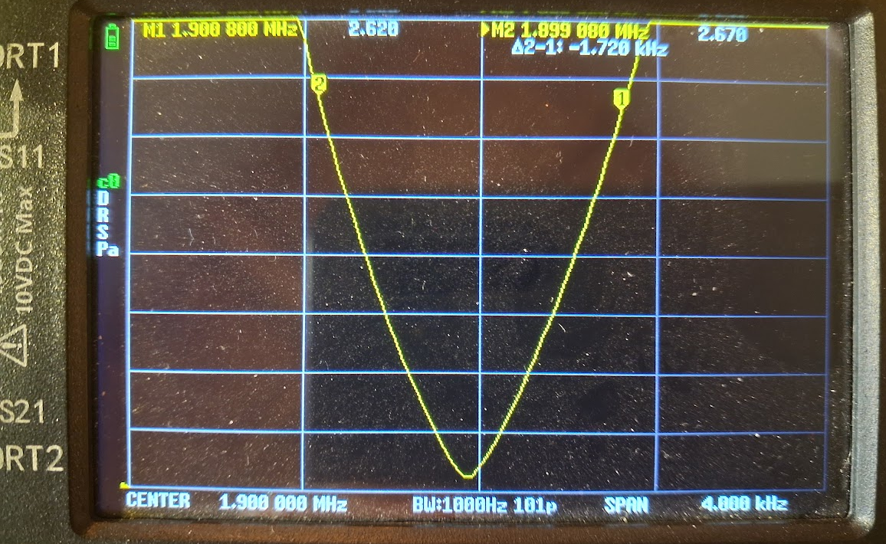
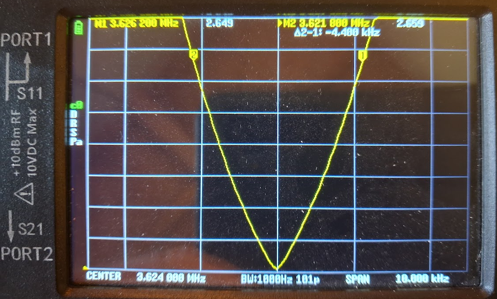
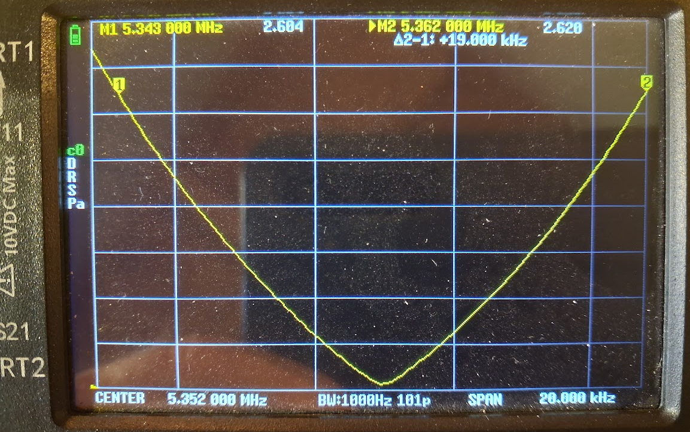
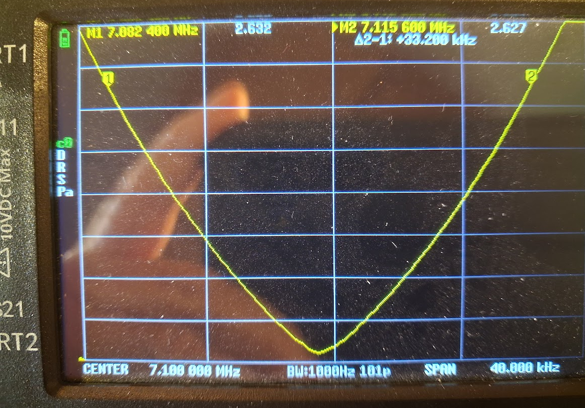
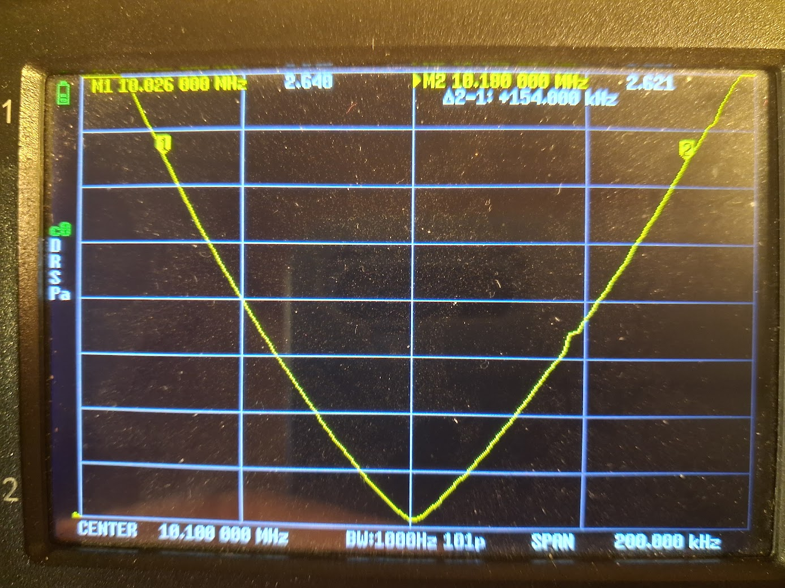

The SWR of the antenna was measured with a NanoVNA. The intrinsic bandwidth B_int is estimated to equal the B_SWR = 2.62 shown in the images below.

SWR measured with a NanoVNA at 475 kHz (630 m band). B_SWR_2.62: 1.18 kHz.

SWR measured with a NanoVNA at 1.9 MHz (160 m band). B_SWR_2.62: 1.72 kHz.

SWR measured with a NanoVNA at 3.624 MHz (80 m band). B_SWR_2.62: 4.4 kHz.

SWR measured with a NanoVNA at 5.362 MHz (60 m band). B_SWR_2.62: 19 kHz.

SWR measured with a NanoVNA at 7.1 MHz (40 m band). B_SWR_2.62: 33.2 kHz.

SWR measured with a NanoVNA at 10.1 MHz (30 m band). B_SWR_2.62: 154 kHz.